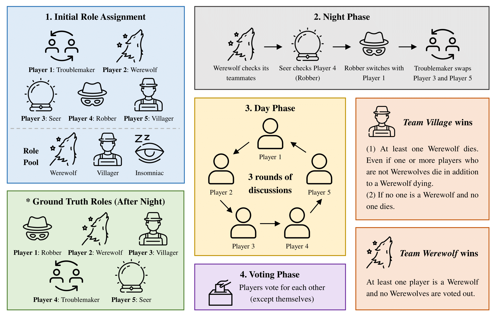
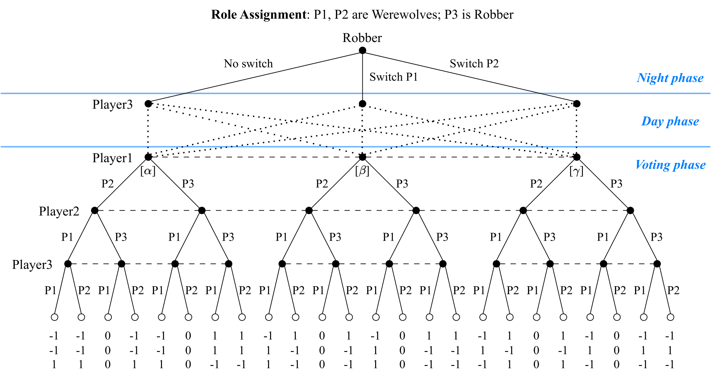
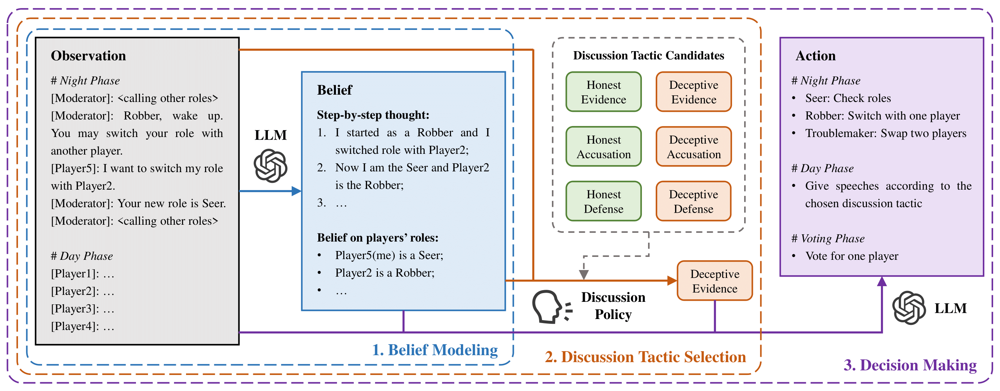
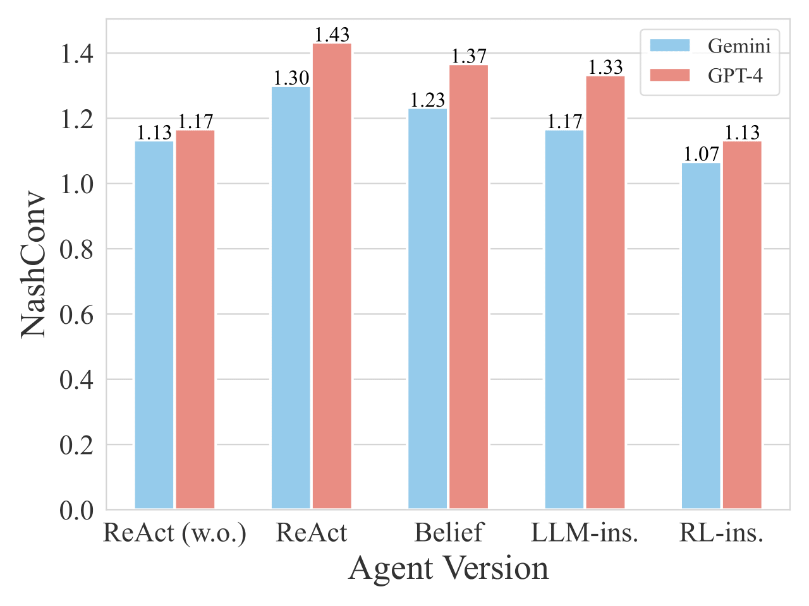
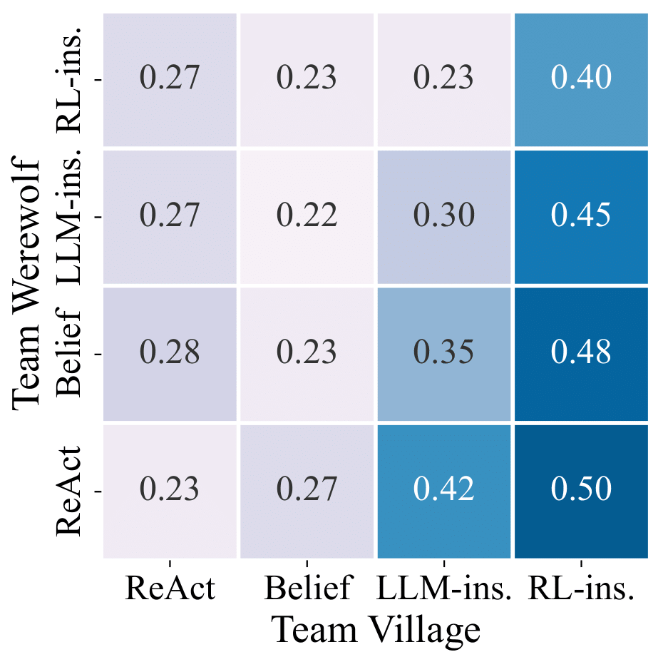
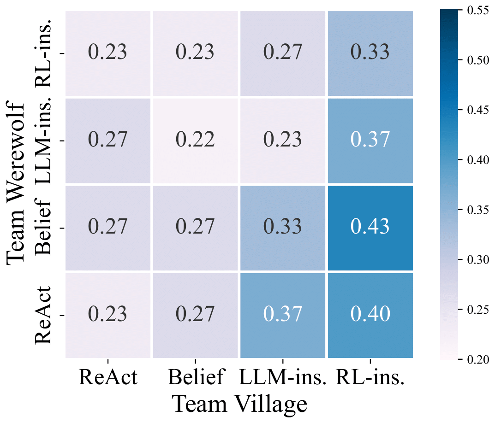

1Institute of Automation, Chinese Academy of Sciences,2Cooperative AI Lab, Department of Informatics, King's College London,3School of Artificial Intelligence, University of Chinese Academy of Sciences,4University of Liverpool,5Nanjing Artificial Intelligence Research of IA,6AI Centre, Department of Computer Science, UCL
Communication is a fundamental aspect of human society, facilitating the exchange of information and beliefs among people. Despite the advancements in large language models (LLMs), recent agents built with these often neglect the control over discussion tactics, which are essential in communication scenarios and games. As a variant of the famous communication game Werewolf, One Night Ultimate Werewolf (ONUW) requires players to develop strategic discussion policies due to the potential role changes that increase the uncertainty and complexity of the game. In this work, we first present the existence of the Perfect Bayesian Equilibria (PBEs) in two scenarios of the ONUW game: one with discussion and one without. The results showcase that the discussion greatly changes players' utilities by affecting their beliefs, emphasizing the significance of discussion tactics. Based on the insights obtained from the analyses, we propose an RL-instructed language agent framework, where a discussion policy trained by reinforcement learning (RL) is employed to determine appropriate discussion tactics to adopt. Our experimental results on several ONUW game settings demonstrate the effectiveness and generalizability of our proposed framework.
Game Process Overview

Game process of the ONUW game
The game process shows four main phases: Initial Role Assignment (roles are randomly dealt to each player), Night Phase (abilities performed in order), Day Phase (discussion in three rounds), and Voting Phase (suspicious player voted out). The diagram illustrates how roles can change during the night phase and how the winner is determined based on the voting results.
Game Analysis
Here we consider a simple but interesting version of the ONUW game: with two Werewolves and one Robber. We present certain Perfect Bayesian Equilibria in this game under two different assumptions, which demonstrate the crucial role that discussion during the Day phase plays in the ONUW game.
A detailed game tree showing player decisions and information sets during Night and Voting phases. Nodes on the same dash lines are in the same information sets for corresponding players.
Theorem 4.1.For the ONUW game with two Werewolves and one Robber, in the case where discussion is not allowed, there exist PBEs \((\pi^*, b^*)\): the Robber switches with any Werewolves with a probability of \(1/2\) and votes for the player it switches with; the two Werewolves directly vote for each other. Each player's belief in \(b^*\) is consistent with other players' strategies. And the expected utilities of all players in the equilibria are:
$$\mathbb{E}_{\pi^*}\left[R^1\right] = \mathbb{E}_{\pi^*}\left[R^2\right] = 0,\ \mathbb{E}_{\pi^*}\left[R^3\right] = 1$$

Game tree of the game with discussion
A detailed game tree showing player decisions and information sets during Night, Day, and Voting phases. Dotted lines represent Player 3's potential speeches, and nodes on the same dash lines are in the same information sets for corresponding players.
Theorem 4.2.For the ONUW game with two Werewolves and one Robber, in the case that both Werewolves form beliefs about the Robber's night action with probabilities of \((\alpha, \beta, \gamma)\) (\(\alpha \neq 0\)), there exist PBEs \((\pi^*, b^*)\) during the Voting phase: the Werewolves vote for Player 3 with a probability of \(q\) and each other with \(1 - q\), where \(q = (\beta + \gamma - \alpha)/2\alpha\); the Robber votes for Player 1 with a probability of \(p\) and Player 2 with \(1 - p\), where \(p = (\alpha^2 + \beta^2 - \gamma^2)/2\alpha^2\). Each player's belief in \(b^*\) is consistent with other players' strategies. To ensure \(p\) and \(q\) are probabilities and the existence of the equilibria, there are constraints on the belief distribution (omitted for brevity). And under the constraints, the expected utilities of all players in these equilibria are:
$$\mathbb{E}_{\pi^*}\left[R^1\right] = \delta (1 - 2\gamma),\ \mathbb{E}_{\pi^*}\left[R^2\right] = \delta (1 - 2\beta),\ \mathbb{E}_{\pi^*}\left[R^3\right] = - \delta$$
where \(\delta = 1/(4\alpha^2) - 1/(2\alpha) - 1\).
Key Findings:
Beliefs are significantly influenced by discussion
Players' utilities are determined by their beliefs
Method: RL-instructed LLM-based Agent

Overview of the RL-instructed LLM-based agent framework
Framework Components:
Belief Modeling:
Form beliefs on players' roles based on the observation
Discussion Tactic Selection:
Utilize a discussion policy trained by RL to choose a discussion tactic from the candidates
Decision Making:
Take action based on the observation (also belief and discussion tactic, according to the game phase)
Key Features
Integration of RL-trained discussion policy with LLM for strategic decision making
Explicit modeling of beliefs about player roles and game state
Phase-specific action generation tailored to game mechanics
Experimental Results
1. Three-Player ONUW Equilibria Analysis

NashConv values for different agent versions playing the three-player ONUW game
Discussion policy (LLM-instructed and RL-instructed) helps reduce NashConv values
RL-trained policy outperforms direct LLM prompting
2. Discussion Policy Effectiveness in Five-Player Game
Easy Setting Results

Team Village's win rates matrix in easy setting
Hard Setting Results

Team Village's win rates matrix in hard setting
Key Findings:
Hard setting (Werewolf switched by Robber) increases reasoning difficulty
Our agent achieves higher win rates as Team Village and Team Werewolf against all other versions
Greater performance improvement when playing as Team Village vs Team Werewolf
Game mechanics favor Werewolf team, leading to smaller improvements for Team Werewolf
3. Discussion Policy Generalizability
Win rates and average votes of agents playing as Player 3
Agents
Gemini (Belief)
GPT-4 (Belief)
Win Rates
Avg. Votes
Win Rates
Avg. Votes
ReAct
0.40
1.23
0.30
1.73
Belief
0.40
1.73
0.32
1.87
Random
0.37
1.53
0.32
2.03
LLM-ins.
0.62
1.10
0.37
1.90
RL-ins.
0.70
1.10
0.50
1.87
Key Findings:
RL-instructed agent outperforms all versions with both Gemini and GPT-4 backends
Achieves highest win rates (0.70 with Gemini, 0.50 with GPT-4)
Maintains lowest average votes (1.10), indicating better role concealment
Successfully competes against GPT-4-based agents despite training on GPT-4 data
BibTeX
@article{
jin2024learning,
title={Learning to Discuss Strategically: A Case Study on One Night Ultimate Werewolf},
author={Jin, Xuanfa and Wang, Ziyan and Du, Yali and Fang, Meng and Zhang, Haifeng and Wang, Jun},
journal={arXiv preprint arXiv:2405.19946},
year={2024}
}